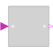
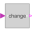
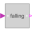
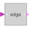
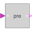
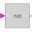

partialBooleanSISOPartial block with 1 input and 1 output Boolean signal |

|
Information
This information is part of the Modelica Standard Library maintained by the Modelica Association.
Block has one continuous Boolean input and one continuous Boolean output signal with a 3D icon (e.g., used in Blocks.Logical library).
Connectors (2)
| u |
Type: BooleanInput Description: Connector of Boolean input signal |
|
|---|---|---|
| y |
Type: BooleanOutput Description: Connector of Boolean output signal |
Extended by (5)
|  |
Modelica.Blocks.Logical Output y is true, if the input u has a rising or falling edge (y = change(u)) |
|  |
Modelica.Blocks.Logical Output y is true, if the input u has a falling edge (y = edge(not u)) |
|  |
Modelica.Blocks.Logical Output y is true, if the input u has a rising edge (y = edge(u)) |
|  |
Modelica.Blocks.Logical Breaks algebraic loops by an infinitesimal small time delay (y = pre(u): event iteration continues until u = pre(u)) |
|  |
Modelica.Blocks.Logical Logical 'not': y = not u |